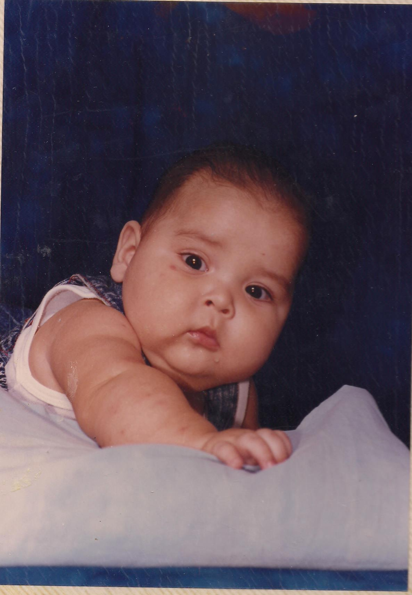

.jpg)
.jpg)
Al cumplir los 6 meses llegue a pesar 15kg.
Al cumplir los 6 meses llegue a pesar 15kg.

Mi mama en su juventud vivía en un rancho más aya de San José de Ahome llamado Las Grullas ahí nació y vivió hasta que en el año de 1982 llego el huracán Paul y debido a esto se desbordo el rio y no hubo más que hacer que desalojar el lugar. Vivieron en diversas partes antes de venir a Los Mochis como las Higueras. Cuando llegaron y se quedaron en Los Mochis mi mama se tuvo que poner a trabajar desde muy pequeña ya que no tenían ni con que comer. Ella misma se pagó la escuela secundaria ya que mis abuelos no tenían para pagarla y le decían que se saliera que no servía para nada pues en ese entonces ella lo único que quería era estudiar. Paso por diversos trabajos en el mercado el los jugos en la esquina del chiflador, en pollerías, en la ley, en el supermercado mz, en casa limpiando, bueno muchísimas partes solo para poder estudiar. Mientras trabajo de cajera en Ley tabachines conoció a mi papa el trabajaba de seguridad.